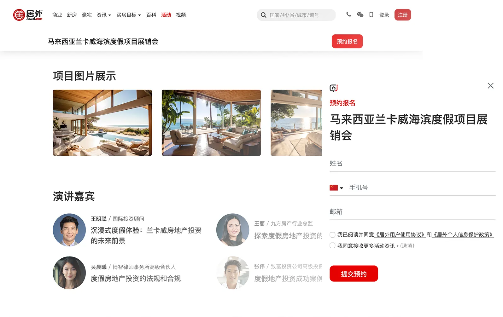

Juwai hosts events for property buyers to learn about the overseas property market, but due to a lack of promotion, the attendance rate was poor. In order to remedy the situation, we created a brand-new event channel on Juwai.com, which will serve as a hub for promoting and organizing events. Additionally, we developed a content management system (CMS) to facilitate team management of the channel.
Here are initial project stages. Click to expand for details or scroll down to view the final product.
On the top of the event channel homepage, a rotating banner was implemented to showcase featured and upcoming events, aiming to increase the exposure and participation rate.
This was followed by a grid view of event thumbnails, designed to resemble movie posters, in order to enhance recognition and engage attendees.
Based on our study of current landing pages, we have developed a responsive landing page template incorporating the sections we identified.
The well-organized page enables visitors to navigate and access comprehensive event details, ultimately leading to increased participation rates.
The registration button is conveniently positioned on the sticky top bar on the landing page, ensuring easy access for buyers to register for the event.
In order to streamline the event management process, we have developed a CMS for marketing team to independently manage both the event channel and the event landing pages.
The event landing page template is divided into sections, each designed as modules with pre-defined layouts. The team can easily modify the text and upload images using the input fields within the CMS.
Once the landing page is published through the CMS, it will automatically generate and appear on the Event Channel, ensuring a seamless and efficient process for displaying event information.